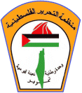
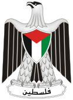

Palestine Liberation Organization
The neutrality of this article is disputed. (June 2018) (Learn how and when to remove this template message) |
Palestine Liberation Organization منظمة التحرير الفلسطينية Munaẓẓamat at-Taḥrīr al-Filasṭīniyyah | |
|---|---|
|  | |
| Abbreviation | PLO |
| Chairman | Mahmoud Abbas |
| Founded | 28 May 1964[1] |
| Headquarters | Ramallah, West Bank[2][3] |
| Ideology | Palestinian nationalism |
| Anthem | Fida'i[4] |
{kind=link}
|  |
|---|
| This article is part of a series on the politics and government of Palestine |
|
Officeholders whose status is disputed are shown in italics |
| Palestine portal |
.svg){kind=link}
{kind=link}
The Palestine Liberation Organization (PLO; Arabic: منظمة التحرير الفلسطينية, Munaẓẓamat at-Taḥrīr al-Filasṭīniyyah (help·info)) is an organization founded in 1964 with the purpose of the "liberation of Palestine" through armed struggle, with much of its violence aimed at Israeli civilians.[5][6][7][8][9][7][10][11] It is recognized as the "sole legitimate representative of the Palestinian people" by over 100 states with which it holds diplomatic relations,[12][13] and has enjoyed observer status at the United Nations since 1974.[14][15][16] The PLO was considered by the United States and Israel to be a terrorist organization[17][18] until the Madrid Conference in 1991. In 1993, the PLO recognized Israel's right to exist in peace, accepted UN Security Council resolutions 242 and 338, and rejected "violence and terrorism". In response, Israel officially recognized the PLO as the representative of the Palestinian people.[19] However, the PLO has employed violence in the years since 1993, particularly during the 2000–2005 Second Intifada. On 29 October 2018, the Palestinian Central Council suspended the recognition of Israel and halted security and economic coordination in all its forms with it.[20]
Contents
Founding
At its first summit meeting in Cairo in 1964, the Arab League initiated the creation of an organization representing the Palestinian people.[21] The Palestinian National Council convened in Jerusalem on 28 May 1964. Concluding this meeting the PLO was founded on 2 June 1964. Its stated goal was the "liberation of Palestine" through armed struggle.[22]
Ideology
The ideology of the PLO was formulated in the founding year 1964 in the Palestinian National Covenant.[22] The document is a combative anti-Zionist statement dedicated to the "restoration of the Palestinian homeland". It has no reference to religion. In 1968, the Charter was replaced by a comprehensively revised version.[23]
Until 1993, the only promoted option was armed struggle. From the signing of the Oslo Accords, negotiation and diplomacy became the only official policy. In April 1996, a large number of articles, which were inconsistent with the Oslo Accords, were wholly or partially nullified.[24]
At the core of the PLO's ideology is the belief that Zionists had unjustly expelled the Palestinians from Palestine and established a Jewish state in place under the pretext of having historic and Jewish ties with Palestine. The PLO demanded that Palestinian refugees be allowed to return to their homes. This is expressed in the National Covenant:
Article 2 of the Charter states that ″Palestine, with the boundaries it had during the British mandate, is an indivisible territorial unit″,[23] meaning that there is no place for a Jewish state. This article was adapted in 1996 to meet the Oslo Accords.[24]
Article 20 states: ″The Balfour Declaration, the Mandate for Palestine, and everything that has been based upon them, are deemed null and void. Claims of historical or religious ties of Jews with Palestine are incompatible with the facts of history and the true conception of what constitutes statehood. Judaism, being a religion, is not an independent nationality. Nor do Jews constitute a single nation with an identity of its own; they are citizens of the states to which they belong″.[23] This article was nullified in 1996.
Article 3 reads: ″The Palestinian Arab people possess the legal right to their homeland and have the right to determine their destiny after achieving the liberation of their country in accordance with their wishes and entirely of their own accord and will″.
The PLO has always labelled the Palestinian people as Arabs. This was a natural consequence of the fact that the PLO was an offshoot of the Arab League. It also has a tactical element, as to keep the backing of Arab states. Over the years, the Arab identity remained the stated nature of the Palestinian State.[25] It is a reference to the ″Arab State″ envisioned in the UN Partition Plan.
Secularism versus adherence to Islam
The PLO and its dominating faction Fatah are often contrasted to more religious orientated factions like Hamas and the Palestinian Islamic Jihad (PIJ). All, however, represent a predominant Muslim population. Practically the whole population of the Territories is Muslim, most of them Sunni. Only some 50,000 (ca 1%) of the 4.6 million Palestinians in the occupied Palestinian territories (OPT) are Palestinian Christian.[26][27]
The National Charter has no reference to religion. Under President Arafat, the Fatah-dominated Palestinian Authority adopted the 2003 Amended Basic Law, which stipulates Islam as the sole official religion in Palestine and the principles of Islamic sharia as a principal source of legislation.[25] The draft Constitution, which never materialized, contains the same provisions.[28][29] At the time, the Palestine Legislative Council (PLC), the unicameral legislature of the Palestinian Authority, elected by the Palestinian residents of the Palestinian territories of the West Bank and Gaza Strip, did not include a single Hamas member. The draft Constitution was formulated by the ″Constitutional Committee″, appointed with the approval of the PLO.[30][31]
Organization
Structure
{kind=link}
The PLO incorporates a range of generally secular ideologies of different Palestinian movements "committed to the struggle for Palestinian independence and liberation," hence the name of the organization. It formally is an umbrella organization that includes "numerous organizations of the resistance movement, political parties, and popular organizations."[32] From the beginning, the PLO was designed as a government in exile, with a parliament, the Palestine National Council (PNC), chosen by the Palestinian people, as the highest authority in the PLO, and an executive government (EC), elected by the PNC.[32] In practice, however, the organization was rather a hierarchic one with a military-like character, needed for its function as liberation organization, the "liberation of Palestine".[21]
Beside a Palestinian National Charter, which describes the ideology of the PLO, a constitution, named "Fundamental Law", was adopted, which dictates the inner structure of the organization and the representation of the Palestinian people. A draft Constitution was written in 1963, to rule the PLO until free general elections among all the Palestinians in all the countries in which they resided could be held.[33] The Constitution was revised in 1968.[34]
Institutions
The Palestinian National Council has 740 members and the Executive Committee or ExCo has 18 members. The Palestinian Central Council or CC or PCC, established by the PNC in 1973, is the second leading body of the PLO.[35] The CC consists of 124 members[36] from the PLO Executive Committee, PNC, PLC and other Palestinian organizations.[37] The EC includes 15 representatives of the PLC.[32] The CC functions as an intermediary body between the PNC and the EC. The CC makes policy decisions when PNC is not in session, acting as a link between the PNC and the PLO-EC. The CC is elected by the PNC and chaired by the PNC speaker.[38]
The PNC serves as the parliament for all Palestinians inside and outside of the Occupied Palestinian Territory, including Jerusalem. The PLO is governed internally by its "Fundamental Law", which describes the powers and the relations between the organs of the PLO.[35]
Ahmad Shukeiri was the first Chairman of the PLO Executive Committee from 1964 to 1967.[39] In 1967, he was replaced by Yahia Hammuda. Yasser Arafat occupied the function from 1969 until his death in 2004.[40] He was succeeded by Mahmoud Abbas (also known as Abu Mazen).[41][42]
According to an internal PLO document, the current PNC remains in function if elections are not possible. In absence of elections, most of the members of the PNC are appointed by the Executive Committee. The document further states that "the PNC represents all sectors of the Palestinian community worldwide, including numerous organizations of the resistance movement, political parties, popular organizations and independent personalities and figures from all sectors of life, including intellectuals, religious leaders and businessmen".[35]
Challenged representation
As of 2015, there have not been elections for many years, neither for the PNC, nor for the EC, the PCC or the President of the State of Palestine. The Executive Committee has formally 18 members, including its Chairman, but in past years many vacant seats in the Executive remained empty. Moreover, Hamas, the largest representative of the inhabitants of the Palestinian Territories alongside Fatah, is not represented in the PLO at all. The results of the last parliamentary elections for the PLC, held in the Territories in 2006, with Hamas as the big winner while not even a member of the PLO, "underlined the clear lack of a popular mandate by the PLO leadership", according to PASSIA.[43] Individual elected members of the PLC representing Hamas, however, are automatically members of the PNC.
The representative status of the PLO has often been challenged in the past.[21] It was for example doubted in 2011 by a group of Palestinian lawyers, jurists and legal scholars, due to lack of elections. They questioned the PLO's legitimacy to alter the status and role of the Organisation in respect of their status within the UN. They demanded immediate and direct elections to the Palestine National Council to ″activate representative PLO institutions in order to preserve, consolidate, and strengthen the effective legal representation of the Palestinian people as a whole″, before changing the status within the UN.[44]
PLO versus PA
The 1993–1995 Oslo Accords deliberately detached the Palestinian population in the Occupied Palestinian Territories from the PLO and the Palestinians in exile by creating a Palestinian Authority (PA) for the Territories. A separate parliament and government were established. Mahmoud Abbas was one of the architects of the Oslo Accords.[45][46]
Although many in the PLO opposed the Oslo Agreements, the Executive Committee and the Central Council approved the Accords. It marked the beginning of the PLO's decline, as the PA came to replace the PLO as the prime Palestinian political institution. Political factions within the PLO that had opposed the Oslo process were marginalized. Only during the Hamas-led PA Government in 2006–2007, the PLO resurfaced. After Hamas had taken over Gaza in 2007, Abbas issued a decree suspending the PLC and some sections of the Palestinian Basic Law, and appointing Salam Fayyad as Prime Minister.[21]
The PLO managed to overcome the separation by uniting the power in PLO and PA in one individual, Yasser Arafat. In 2002, Arafat held the functions Chairman of the PLO/Executive Committee and Chairman of Fatah, the dominating faction within the PLO, as well as President of the Palestinian National Authority. He also controlled the Palestinian National Security Forces.[47]
Internal politics
On 4 February 1969, Fatah founder Arafat was elected Chairman of the PLO in Cairo.[48][49] Since, Fatah has been the dominant factor within the PLO, which still continues in 2015.
Under pressure from the international community led by Israel and US, and from inside his own party Fatah, Arafat partially transferred some of his strongly centralized power in 2003,[29][47][50] causing strong tensions within the Palestinian leadership. Arafat appointed Mahmoud Abbas as prime minister, but this resulted in disputes about the transfer of tasks and responsibilities. Abbas was strongly supported by the US and the international community, because he was supposed to be more willing to give far-reaching concessions to Israel.[47] While Arafat had retained most of his power and a power struggle within Fatah continued, the leadership was criticised for corruption and nepotism.[51][52]
After Arafat's death, Abbas increasingly gained exclusive powers within both PLO and PA as well as in Fatah, until he had acquired the same power as was previously held by Arafat.[53] Critics say that Abbas even got more powers than Arafat.[54] Abbas is criticized for his autocratic rule and refusal to share powers and plans with other Palestinians. In the absence of a functioning parliament and Executive, he even began to issue his own laws. Senior representative of Abbas' Fatah faction and former Fatah minister of prisoner affairs Sufian Abu Zaida complained that Abbas appointed himself as the chief judge and prosecutor, making a mockery of the Palestinian judicial system.[54] There appeared reports of widespread corruption and nepotism within the Palestinian Authority.[53][55] Only Hamas-ruled Gaza has a more or less functioning parliament.[56]
2015 struggle for power
With a de facto defunct parliament and Executive, Mahmoud Abbas increasingly gained exclusive powers within both PLO and PA, as well as in Fatah. After the announcement in August 2015 of Abbas' resignation as Chairman of the Executive Committee and of nine other members as well, many Palestinians saw the move as just an attempt to replace some members in the Executive Committee, or to force a meeting of the PNC and remain in their jobs until the PNC decides whether to accept or to reject their resignations.[57][58] Met with fierce criticism by many Palestinian factions, a session of the PNC, who had to approve the resignations, was postponed indefinitely.[59]
Political status
The Palestine Liberation Organization is recognized by the Arab League as "the sole and legitimate representative of the Palestinian people",[12][35] and by the United Nations as "the representative of the Palestinian people".[60]
The PLO was designated a terrorist organization by the United States in 1987,[17][61] but in 1988, a presidential waiver was issued, which permitted contact with the organization.[18] Most of the rest of the world recognized the PLO as the legitimate representatives of the Palestinian people from the mid-1970s onwards (after the PLO's admission to the UN as an observer.)[62]
Israel considered the PLO to be a terrorist organization until the Madrid Conference in 1991.[18] In 1993, PLO chairman Yasser Arafat recognized the State of Israel in an official letter to its prime minister, Yitzhak Rabin. In response to Arafat's letter, Israel decided to revise its stance toward the PLO and to recognize the organization as the representative of the Palestinian people.[63][64] This led to the signing of the Oslo Accords in 1993.
Status at the United Nations
Observer status
The United Nations General Assembly recognized the PLO as the "representative of the Palestinian people" in Resolution 3210 and Resolution 3236, and granted the PLO observer status on 22 November 1974 in Resolution 3237. On 12 January 1976 the UN Security Council voted 11–1 with 3 abstentions to allow the Palestinian Liberation Organization to participate in a Security Council debate without voting rights, a privilege usually restricted to UN member states. It was admitted as a full member of the Asia group on 2 April 1986.[65][66][67]
After the Palestinian Declaration of Independence the PLO's representation was renamed Palestine.[68] On 7 July 1998, this status was extended to allow participation in General Assembly debates, though not in voting.[69]
2011 application for UN state membership
When President Mahmoud Abbas submitted an application for UN state membership, in September 2011, Palestinian lawyers, jurists and legal scholars expressed their concern that the change of Palestine's status in the UN (since 1988 designated as "Palestine" in place of "Palestine Liberation Organization") could have negative implications on the legal position of the Palestinian people. They warned for the risk of fragmentation, where the State of Palestine would represent the people within the UN and the PLO represent the people outside the UN, the latter including the Palestinians in exile, where refugees constitute more than half of the Palestinian people. They were also afraid of the loss of representation of the refugees in the UN.[44] In Resolution 67/19 November 2012, Palestine was at last awarded non-member observer State status, but the General Assembly maintained the status of the PLO.
′Non-member observer state′ status
By September 2012, with their application for full membership stalled due to the inability of Security Council members to 'make a unanimous recommendation', the PLO had decided to pursue an upgrade in status from "observer entity" to "non-member observer state". On 29 November 2012, Resolution 67/19 passed, upgrading Palestine to "non-member observer State" status in the United Nations.[70][71][72] The new status equates Palestine's with that of the Holy See.[73]
Diplomatic representation
The Palestine Information Office was registered with the Justice Department of the United States as a foreign agent until 1968, when it was closed. It was reopened in 1989 as the Palestine Affairs Center.[74] The PLO Mission office, in Washington D.C was opened in 1994, and represented the PLO in the United States. On 20 July 2010, the United States Department of State agreed to upgrade the status of the PLO Mission in the United States to "General Delegation of the PLO".[75] Secretary of State Tillerson in 2017 determined that the PLO Mission broke US law prescribing the PLO Mission from attempting to get the International Criminal Court to prosecute Israelis for offences against Palestinians, under penalty of closure.[76] On 10 September 2018, National security advisor John Bolton announced the closure of the PLO Mission;[77] Nauert, a U.S. Department of State spokeswoman, cited as a reason Palestine's "push to have the International Criminal Court investigate Israel for possible war crimes."[78]
Peace process
Initially, as a guerrilla organization, the PLO performed actions against Israel in the 1970s and early 1980s, regarded as terroristic activities by Israel and regarded as a war of liberation by the PLO. In 1988, however, the PLO officially endorsed a two-state solution, contingent on terms such as making East Jerusalem capital of the Palestinian state and giving Palestinians the right of return to land occupied by Palestinians prior to 1948, as well as the right to continue armed struggle until the end of "The Zionist Entity."[79] In 1996, the PLO nullified the articles of the PLO's Charter, or parts of it, which called for the destruction of Israel and for armed resistance.[80]
Ten Point Program
Following the failure of the armies of Egypt and Syria to defeat Israel in the October 1973 Yom Kippur War, which broke the status quo existing since the June 1967 Six-Day War, the PLO began formulating a strategic alternative.[81] Now, they intended to establish a "national authority" over every territory they would be able to reconquer. From 1 to 9 June 1974, the Palestine National Council held its 12th meeting in Cairo. On 8 June, the Ten Point Program was adopted. The Program stated:
The Liberation Organization will employ all means, and first and foremost armed struggle, to liberate Palestinian territory and to establish the independent combatant national authority for the people over every part of Palestinian territory that is liberated. This will require further changes being effected in the balance of power in favour of our people and their struggle.[82]
By "every part of Palestinian territory that is liberated" was implicitly meant the West Bank and Gaza Strip, albeit presented as an interim goal.[81] The final goal remained "completing the liberation of all Palestinian territory" and "recover all their national rights and, first and foremost, their rights to return and to self-determination on the whole of the soil of their homeland".[83] Also UN Resolution 242 was still rejected.[82]
While clinging to armed struggle as the prime means, the PLO no longer excluded peaceful means.Therefore, the Ten Point Program was considered the first attempt by the PLO at peaceful resolution. In October 1974, the Arab League proclaimed the PLO "the sole legitimate representative of the Palestinian people in any Palestinian territory that is liberated", and also the UN recognized the PLO. From then, the diplomatic road was prepared. On the other hand, the Program was rejected by more radical factions and eventually caused a split in the movement.[81]
First Intifada
In 1987, the First Intifada broke out in the West Bank and Gaza Strip. The Intifada caught the PLO by surprise,[84] and the leadership abroad could only indirectly influence the events. A new local leadership emerged, the Unified National Leadership of the Uprising (UNLU), comprising many leading Palestinian factions. After King Hussein of Jordan proclaimed the administrative and legal separation of the West Bank from Jordan in 1988,[85] the Palestine National Council adopted the Palestinian Declaration of Independence in Algiers, proclaiming an independent State of Palestine. The declaration made reference to UN resolutions without explicitly mentioning Security Council Resolutions 242 and 338.
A month later, Arafat declared in Geneva that the PLO would support a solution of the conflict based on these Resolutions. Effectively, the PLO recognized Israel's right to exist within pre-1967 borders, with the understanding that the Palestinians would be allowed to set up their own state in the West Bank and Gaza. The United States accepted this clarification by Arafat and began to allow diplomatic contacts with PLO officials. The Proclamation of Independence did not lead to statehood, although over 100 states recognised the State of Palestine.
Oslo Accords
In 1993, the PLO secretly negotiated the Oslo Accords with Israel.[86] The accords were signed on 20 August 1993.[86] There was a subsequent public ceremony in Washington D.C. on 13 September 1993 with Yasser Arafat and Yitzhak Rabin.[87] The Accords granted Palestinians the right to self-government on the Gaza Strip and the city of Jericho in the West Bank through the creation of the Palestinian Authority. Yasser Arafat was appointed head of the Palestinian Authority and a timetable for elections was laid out. The headquarters of the PLO were moved to Ramallah on the West Bank.[2][3]
Legal actions against the PLO
The PLO has been sued in the United States by families of those killed or injured in attacks by Palestinians. One of those lawsuits was settled prior to going to trial,[88][89] while another went to trial. The PLO was found liable and ordered to pay a judgment of $655.5 million US dollars; however, that verdict was overturned on appeal for a lack of US federal jurisdiction over actions committed overseas.[90]
History and armed actions
Early actions
The PLO began their militancy campaign from its inception with an attack on Israel's National Water Carrier in January 1965.[18] The group used guerrilla tactics to attack Israel from their bases in Jordan (including the West Bank), Lebanon, Egypt (Gaza Strip), and Syria.[91]
The most notable of what were considered terrorist acts committed by member organizations of the PLO were:
- The 1970 Avivim school bus massacre by the Democratic Front for the Liberation of Palestine (DFLP), killed nine children, three adults and crippled 19.
- In the late 1960s and early 1970s, the Popular Front for the Liberation of Palestine, the second-largest PLO faction after al-Fatah, carried out a number of attacks and plane hijackings mostly directed at Israel, most infamously the Dawson's Field hijackings, which precipitated the Black September crisis.
- In 1972, the Black September Organization carried out the Munich massacre of Israeli Olympic athletes.
- In 1974, members of the DFLP seized a school in Israel and killed a total of 26 students and adults and wounded over 70 in the Ma'alot massacre.
- The 1975, Savoy Hotel hostage situation killing 8 hostages and 3 soldiers, carried out by Fatah.
- The 1978, Coastal Road massacre killing 37 Israelis and wounding 76, also carried out by Fatah.
War of attrition
From 1967 to September 1970 the PLO, with passive support from Jordan, fought a war of attrition with Israel. During this time, the PLO launched artillery attacks on the moshavim and kibbutzim of Bet Shean Valley Regional Council, while fedayeen launched numerous attacks on Israeli forces. Israel raided the PLO camps in Jordan, including Karameh, withdrawing only under Jordanian military pressure.[92]
This conflict culminated in Jordan's expulsion of the PLO to Lebanon in July 1971.
Black September
The PLO suffered a major reversal with the Jordanian assault on its armed groups, in the events known as Black September in 1970. The Palestinian groups were expelled from Jordan, and during the 1970s, the PLO was effectively an umbrella group of eight organizations headquartered in Damascus and Beirut, all devoted to armed struggle against Zionism or Israeli occupation, using methods which included direct clashing and guerrilla warfare against Israel. After Black September, the Cairo Agreement led the PLO to establish itself in Lebanon.
Lebanon and the Lebanese Civil War
In the late 1960s, and especially after the expulsion of the Palestinian militants from Jordan in Black September events in 1970–1971, Lebanon had become the base for PLO operations. Palestinian militant organizations relocated their headquarters to South Lebanon, and relying on the support in Palestinian refugee camps, waged a campaign of attacks on the Galilee and on Israeli and Jewish targets worldwide. Increasing penetration of Palestinians into Lebanese politics and Israeli retaliations gradually deteriorated the situation.
By the mid-1970s, Arafat and his Fatah movement found themselves in a tenuous position.[citation needed] Arafat increasingly called for diplomacy, perhaps best symbolized by his Ten Points Program and his support for a UN Security Council resolution proposed in 1976 calling for a two-state settlement on the pre-1967 borders.[citation needed] But the Rejectionist Front denounced the calls for diplomacy, and a diplomatic solution was vetoed by the United States.[citation needed] In 1975, the increasing tensions between Palestinian militants and Christian militias exploded into the Lebanese Civil War, involving all factions. On 20 January 1976, the PLO took part in the Damour massacre in retaliation to the Karantina massacre. The PLO and Lebanese National Movement attacked the Christian town of Damour, killing 684 civilians and forcing the remainder of the towns population to flee. In 1976 Syria joined the war by invading Lebanon, which began the 29‑year Syrian occupation of Lebanon, and in 1978 Israel invaded South Lebanon, in response to the Coastal Road Massacre, executed by Palestinian militants based in Lebanon.
The population in the West Bank and Gaza Strip saw Arafat as their best hope for a resolution to the conflict.[citation needed] This was especially so in the aftermath of the Camp David Accords of 1978 between Israel and Egypt, which the Palestinians saw as a blow to their aspirations to self-determination.[citation needed] Abu Nidal, a sworn enemy of the PLO since 1974,[citation needed] assassinated the PLO's diplomatic envoy to the European Economic Community, which in the Venice Declaration of 1980 had called for the Palestinian right of self-determination to be recognized by Israel.
Opposition to Arafat was fierce not only among radical Arab groups, but also among many on the Israeli right.[citation needed] This included Menachem Begin, who had stated on more than one occasion that even if the PLO accepted UN Security Council Resolution 242 and recognized Israel's right to exist, he would never negotiate with the organization.[93][verification needed] This contradicted the official United States position that it would negotiate with the PLO if the PLO accepted Resolution 242 and recognized Israel, which the PLO had thus far been unwilling to do. Other Arab voices had recently called for a diplomatic resolution to the hostilities in accord with the international consensus, including Egyptian leader Anwar Sadat on his visit to Washington, DC in August 1981, and Crown Prince Fahd of Saudi Arabia in his 7 August peace proposal; together with Arafat's diplomatic maneuver, these developments made Israel's argument that it had "no partner for peace" seem increasingly problematic. Thus, in the eyes of Israeli hard-liners, "the Palestinians posed a greater challenge to Israel as a peacemaking organization than as a military one".[94]
After the appointment of Ariel Sharon to the post of Minister of defence in 1981, the Israeli government policy of allowing political growth to occur in the occupied West Bank and Gaza strip changed. The Israeli government tried, unsuccessfully, to dictate terms of political growth by replacing local pro-PLO leaders with an Israeli civil administration.[95]
In 1982, after an attack on a senior Israeli diplomat by Lebanon-based Palestinian militants in Lebanon, Israel invaded Lebanon in a much larger scale in coordination with the Lebanese Christian militias, reaching Beirut and eventually resulting in ousting of the PLO headquarters in June that year. Low-level Palestinian insurgency in Lebanon continued in parallel with the consolidation of Shia militant organizations, but became a secondary concern to Israeli military and other Lebanese factions. With ousting of the PLO, the Lebanese Civil War gradually turned into a prolonged conflict, shifting from mainly PLO-Christian conflict into involvement of all Lebanese factions – whether Sunni, Shia, Druze, and Christians.
Tunis
In 1982, the PLO relocated to Tunis, Tunisia after it was driven out of Lebanon by Israel during the First Lebanon War. Following massive raids by Israeli forces in Beirut, it is estimated that 8,000 PLO fighters evacuated the city and dispersed.[96]
On 1 October 1985, in Operation Wooden Leg, Israeli Air Force F-15s bombed the PLO's Tunis headquarters, killing more than 60 people.
It is suggested that the Tunis period (1982–1991) was a negative point in the PLO's history, leading up to the Oslo negotiations and formation of the Palestinian Authority (PA). The PLO in exile was distant from a concentrated number of Palestinians and became far less effective.[97] There was a significant reduction in centres of research, political debates or journalistic endeavours that had encouraged an energised public presence of the PLO in Beirut. More and more Palestinians were abandoned, and many felt that this was the beginning of the end.[98]
Second Intifada
The Second or Al-Aqsa Intifada started concurrently with the breakdown of July 2000 Camp David talks between Palestinian Authority Chairman Yasser Arafat and Israeli Prime Minister Ehud Barak. The Intifada never ended officially, but violence hit relatively low levels during 2005. The death toll, including both military personnel and civilians, of the entire conflict in 2000–2004 is estimated to be 3,223 Palestinians and 950 Israelis, although this number is criticized for not differentiating between combatants and civilians.[citation needed] Members of the PLO have claimed responsibility for a number of attacks against Israelis during the Second Intifada.[citation needed]
In February 2015, in a civil case considered by a US federal court the Palestinian Authority and Palestine Liberation Organization were found liable for the death and injuries of US citizens in a number of terrorist attacks in Israel from 2001 to 2004. The damages are to be $655.5 million.[99]
Wealth controversy
According to a 1993 report by the British National Criminal Intelligence Service, the PLO was "the richest of all terrorist organizations", with $8–$10 billion in assets and an annual income of $1.5–$2 billion from "donations, extortion, payoffs, illegal arms dealing, drug trafficking, money laundering, fraud, etc."[100]
Membership
This section needs additional citations for verification. (April 2018) (Learn how and when to remove this template message) |
{kind=link}
Present members include
- Fatah – Largest faction, secular, left-wing nationalist.
- The Popular Front for the Liberation of Palestine (PFLP) – Second largest, radical left militant and communist
- The Democratic Front for the Liberation of Palestine (DFLP) – Third largest, communist
- The Palestinian People's Party (PPP) – socialist[101]
- The Palestinian Liberation Front (PLF, Abu Abbas faction) – Minor left-wing faction
- The Arab Liberation Front (ALF) – Minor faction, aligned to the Iraqi-led Ba'ath Party
- As-Sa'iqa – Syrian-controlled Ba'athist faction
- The Palestinian Democratic Union (Fida) – Minor democratic socialist, two-state solution, non militant faction
- The Palestinian Popular Struggle Front (PPSF, Samir Ghawsha faction) – minor socialist faction
- The Palestinian Arab Front (PAF) – minor pro-Fatah, former Iraqi Ba'athist faction
Former member groups of the PLO include
- The Palestinian Liberation Front (PLF, Abu Nidal Ashqar wing) – socialist
- The Popular Front for the Liberation of Palestine – General Command (PFLP-GC)[102] – aligned to Syria
- The Revolutionary Palestinian Communist Party (RPCP) – communist
- Fatah al-Intifada – Syrian-controlled, leftist split from Fatah
Executive Committee Chairmen
- Ahmad Shukeiri (2 June 1964 – 24 December 1967)
- Yahya Hammuda (24 December 1967 – 2 February 1969)
- Yasser Arafat "Abu Amar" (4 February 1969 – 11 November 2004)
- (in exile in Jordan to April 1971; Lebanon 1971 – December 1982; and Tunis December 1982 – May 1994)
- Mahmoud Abbas "Abu Mazen" (From 29 October 2004 – present)
- (acting [for Arafat] until 11 November 2004)
See also
- Fatah–Hamas conflict
- History of the State of Palestine
- Human rights in the State of Palestine
- Israeli–Palestinian conflict
- Palestine Liberation Army
- Palestinian political violence
- Palestinian territories
- PLO Negotiations Affairs Department
- Palestinian exodus from Kuwait (1990–91)
- Rejectionist Front
- Timeline of the Israeli–Palestinian conflict
References
- ^ Arabs Create Organization For Recovery of Palestine The New York Times; 29 May 1964; "JERUSALEM, (Jordanian Sector) 28 May (Reuters) -The creation of Palestine liberation organization was announced today..."
- ^ Jump up to: a b "In West Bank, Ramallah looks ever more like capital". 30 November 2010 – via Reuters.
- ^ Jump up to: a b "Abbas: Referendum law is 'obstacle to peace' – Middle East – Jerusalem Post". Jpost.com. 24 November 2010. Retrieved 8 March 2017.
- ^ National Anthems. "Palestine".
- ^ Beyer, Lisa (12 November 2004). "Arafat: A Life in Retrospect – TIME". Content.time.com. Retrieved 8 March 2017.
- ^ "Profile: Fatah Palestinian movement". BBC News. 4 August 2009. Retrieved 8 March 2017.
- ^ Jump up to: a b "How Arafat's Palestinian Authority Became an "Entity Supporting Terrorism"". Jcpa.org. 9 December 2001. Retrieved 8 March 2017.
- ^ "Palestine Liberation Organization (PLO)". Adl.org. 9 September 1993. Retrieved 8 March 2017.
- ^ "PLO to Limit Attacks, Arafat Says". Articles.latimes.com. 17 October 2000. Retrieved 8 March 2017.
- ^ "Arafat's Vision of Peace: – A Textual Analysis – The Washington Institute for Near East Policy". Washingtoninstitute.org. Retrieved 8 March 2017.
- ^ "Palestine Liberation Organization (PLO) | Palestinian political organization". Britannica.com. Retrieved 8 March 2017.
- ^ Jump up to: a b Madiha Rashid al Madfai, Jordan, the United States and the Middle East Peace Process, 1974–1991, Cambridge Middle East Library, Cambridge University Press (1993). ISBN 0-521-41523-3. p. 21:"On 28 October 1974, the seventh Arab summit conference held in Rabat designated the PLO as the sole legitimate representative of the Palestinian people and reaffirmed their right to establish an independent state of urgency."
- ^ Geldenhuys, Deon (1990). Isolated states: a comparative analysis. Cambridge University Press. p. 155. ISBN 0-521-40268-9.
The organisation has also been recognized as the sole legitimate representative of the Palestinian people by well over 100 states…
- ^ United Nations General Assembly Resolution 3210. "Invites the Palestine Liberation Organization, the representative of the Palestinian people, to participate in the deliberations of the General Assembly on the question of Palestine in plenary meetings."
- ^ United Nations General Assembly Resolution 3236. "Having heard the statement of the Palestine Liberation Organization, the representative of the Palestinian people, …"
- ^ United Nations General Assembly Resolution 3237
- ^ Jump up to: a b U.S. Code TITLE 22 > CHAPTER 61 > § 5201. Findings; determinations, Legal Information Institute, Cornell Law School. Retrieved 5 December 2006.
- ^ Jump up to: a b c d Rachel Ehrenfeld. "FUNDING EVIL, How Terrorism Is Financed – and How to Stop It" (PDF). Eufunding.org.uk\accessdate=2017-03-08.
- ^ Kim Murphy. "Israel and PLO, in Historic Bid for Peace, Agree to Mutual Recognition," Los Angeles Times, 10 September 1993.
- ^ "المجلس المركزي الفلسطيني يعلن تعليق الاعتراف بدولة إسرائيل". 29 October 2018.
- ^ Jump up to: a b c d The PLO and the crisis of representation. Mazen Masri, Muftah, 15 October 2010
- ^ Jump up to: a b "Permanent Observer Mission of Palestine to the United Nations – Palestine National Charter of 1964". 30 November 2010. Archived from the original on 30 November 2010. Retrieved 8 March 2017.
- ^ Jump up to: a b c The Palestinian National Charter: Resolutions of the Palestine National Council July 1–17, 1968, on Avalon
- ^ Jump up to: a b Letter From President Yasser Arafat to President Clinton, Miftah.org, 13 January 1998
- ^ Jump up to: a b 2003 Amended Basic Law
Art. 1: ″Palestine is part of the larger Arab world, and the Palestinian people are part of the Arab nation.″; Art. 4: ″Islam is the official religion in Palestine. Respect for the sanctity of all other divine religions shall be maintained; The principles of Islamic Shari'a shall be a principal source of legislation.; Arabic shall be the official language.″ - ^ Palestinian Christians in the Holy Land and the Diaspora. Latin Patriarchate of Jerusalem, 21 October 2014
- ^ Palestinian Christians in the Holy Land. Institute for Middle East Understanding, 17 December 2012
- ^ The revision of the third draft of the constitution of the State of Palestine (Art. 5 and 7). 15 May 2003
- ^ Jump up to: a b Draft Palestine Constitution. MidEastWeb, 25 March 2003
- ^ The draft of the Palestinian Constitution. Palestinian Center for Policy and Survey Research (PSR), February 2001
- ^ Palestinian Constitution. Palestinian National Authority, April 2003
- ^ Jump up to: a b c Palestine Liberation Organization. Permanent Observer Mission of Palestine to the United Nations
- ^ The Draft Constitution of the Palestine Liberation Organization (1963) Archived 26 December 2013 at the Wayback Machine See Article 4. The Jerusalem Fund
- ^ Palestine Liberation Organization (PLO):Constitution. Text of the 1968 Constitution on JVL
- ^ Jump up to: a b c d Memo: Distinction between PLO, PA, PNC, PLC. Al Jazeera, The Palestine Papers, 5 February 2006. Available on. Internal PLO document from Mazen Masri, legal researcher, to the PLO Negotiations Support Unit. See also note 4 in the pdf.
- ^ See the 1996 list of members: Members of the PLO Central Council as of 1996. At middleeastreference.org.uk
- ^ "PLO Central Council Members" (PDF). Passia.org. Archived from the original (PDF) on 28 December 2016. Retrieved 8 March 2017.
- ^ [1]
- ^ Pineschi (1 February 1997). The Palestine Yearbook of International Law 1987-1988. Martinus Nijhoff Publishers. ISBN 9041103414.
- ^ Tom Lansford,Political Handbook of the World 2014, p. 1634. CQ Press, March 2014
- ^ "Mahmoud Abbas elected chairman of PLO". nbcnews.com. 2004.
- ^ "Profile: Mahmoud Abbas". BBC News. 29 November 2012. Retrieved 8 December 2017.
- ^ PLO vs. PA Archived 4 March 2016 at the Wayback Machine, p. 9. Passia, September 2014
- ^ Jump up to: a b Palestinian lawyers affirm essential role of PLO at UN. Ma'an News Agency, 13 October 2011
- ^ Profile: Mahmoud Abbas. BBC, 5 November 2009
- ^ Who's Who in the Arab World 2007–2008. Walter de Gruyter, 2007
- ^ Jump up to: a b c Arafat vs Abbas. Al-Ahram Weekly, 17–23 July 2003, Issue No. 647
- ^ "The Morning Record – Google News Archive Search". google.com.
- ^ "Fatah Wins Control Of Palestine Group - Article - Nytimes.Com". Select.nytimes.com. 5 February 1969. Retrieved 8 March 2017.
- ^ Arafat urges overhaul of Palestinian government. CNN, 15 May 2002
- ^ Arafat urged to end corruption after unrest. Chris McGreal, The Guardian, 20 July 2004
- ^ Corruption in Palestine: A Self-Enforcing System. Tariq Dana, Al-Shabaka, 18 August 2015
- ^ Jump up to: a b Critics slam Mahmoud Abbas' PLO resignation as 'farce'. Mel Frykberg, Al Jazeera, 28 August 2015
- ^ Jump up to: a b What the U.S. Does Not Want to Know About Abbas. Khaled Abu Toameh, Gatestone Institute, 29 June 2013
- ^ Report Highlights Corruption in Palestinian Institutions. Hazem Balousha, Al-Monitor, 6 May 2013
- ^ The Legislative Status in the Palestinian Territory. Birzeit University, December 2012.
″Article 43 of the Amended Basic Law grants the President the power to issue decrees that have the power of law in cases of necessity that cannot be delayed. ... Towards 9 January 2009, laws used to be sent by fax or email to the PNA President for approval within 30 days. Otherwise, laws would automatically enter into force. According to the new Law on the Official Gazette, these were published in the Official Gazette. After 9 January 2009, however, no laws have been sent to the President's Office for approval and promulgation. In this context, Mr. Barham went over major laws passed by the Gaza-based PLC.″ - ^ Purported Abbas resignation from PLO Executive Committee ridiculed as ′silly show′. Khaled Abu Toameh, Jerusalem Post, 23 August 2015
- ^ Abbas heats up Palestinian politics in PLO reshuffle bid. Nidal al-Mughrabi and Ali Sawafta, Reuters, 27 August 2015
- ^ PNC chair confirms controversial session postponed. Ma'an News Agency, 9 September 2015
- ^ Resolution 3210 (XXIX). Invitation to the Palestine Liberation Organization Archived 3 January 2011 at the Wayback Machine. UNGA, 14 October 1974
"Invites the Palestine Liberation Organization, the representative of the Palestinian people, to participate in the deliberations of the General Assembly on the question of Palestine in plenary meetings." - ^ 22 USC CHAPTER 61 – ANTI-TERRORISM – PLO Archived 28 April 2013 at the Wayback Machine, Office of the Law Revision Counsel (United States). Retrieved 5 December 2006.
- ^ Hajjar, 2005, p. 53.
- ^ "Israel-PLO recognition – Exchange of letters between PM Rabin and Chairman Arafat/Arafat letter to Norwegian FM (Non-UN documents) (9 September 1993)". 28 October 2013. Archived from the original on 28 October 2013.
- ^ "At the threshold of peace Mutual recognition ends 3 decades of strife between Israel and PLO ISRAELI-PLO PEACE TALKS". Retrieved 6 April 2010.
- ^ Permanent Observer Mission of Palestine to the United Nations. "Status of Palestine at the United Nations". United Nations. Archived from the original on 6 June 2011. Retrieved 9 December 2010.: "On 2 April 1986, the Asian Group of the U.N. decided to accept the PLO as a full member."
- ^ United Nations Conference on Trade and Development (2002). "Government structures". United Nations. Archived from the original on 13 June 2010. Retrieved 5 December 2010.: "At present, the PLO is a full member of the Asian Group of the United Nations".
- ^ United Nations General Assembly Resolution 52/250: Participation of Palestine in the work of the United Nations Archived 22 May 2011 at the Wayback Machine (1998): "Palestine enjoys full membership in the Group of Asian States".
- ^ UN General Assembly (9 December 1988). "United Nations General Assembly Resolution 43/177". UN Information System on the Question of Palestine. Archived from the original on 1 November 2011. Retrieved 29 September 2011.
- ^ "The Law and Practice of the United Nations". google.com.
- ^ General Assembly Votes Overwhelmingly to Accord Palestine ‘Non-Member Observer State’ Status in United Nations. UN press release, 29 November 2012
- ^ "A/67/L.28 of 26 November 2012 and A/RES/67/19 of 29 November 2012". Unispal.un.org. Archived from the original on 10 December 2012.
- ^ Palestine: What is in a name (change)? – Inside Story. Al Jazeera
- ^ Non-member States having received a standing invitation to participate as observers in the sessions and the work of the General Assembly and maintaining permanent observer missions at Headquarters Archived 9 May 2009 at the Wayback Machine. Official UN website
- ^ The Palestinian Diaspora: Formation of Identities and Politics of Homeland, By Helena Lindholm Schulz, Juliane Hammer, Routledge, 2003 p. 81
- ^ Mozgovaya, Natasha. (2010-07-22) U.S. upgrades status of Palestinian mission in Washington Israel News Broadcast. Haaretz. Retrieved on 2013-08-25.
- ^ "US may shut down Palestinians' DC office". Ynet. Associated Press. 18 November 2017. Retrieved 10 September 2018.
Secretary of State Rex Tillerson has determined that the Palestinians ran afoul of an obscure provision in a US law that says the Palestine Liberation Organization's mission must close if the Palestinians try to get the International Criminal Court to prosecute Israelis for crimes against Palestinians. A State Department official said that in September, Palestinian President Mahmoud Abbas crossed that line by calling on the ICC to investigate and prosecute Israelis.
- ^ Michael R. Gordon (10 September 2018). "Trump Administration to Close Palestine Liberation Organization Office in Washington". The Wall Street Journal. Retrieved 10 September 2018.
- ^ Conor Finnegan (10 September 2018). "Trump administration shutting down Palestinian office in Washington DC". ABC News. Retrieved 11 September 2018.
That includes a push to have the International Criminal Court investigate Israel for possible war crimes against the Palestinian people. Erekat said the Palestinians will continue to push for that, which Nauert also cited as a reason for the U.S. decision to shut down the office.
- ^ William L. Cleveland, A History of the Modern Middle East, Westview Press (2004). ISBN 0-8133-4048-9.
- ^ Permanent Observer Mission of Palestine to the United Nations, Decisions and Actions Related to the Palestine National Charter Archived 12 December 2012 at Archive.today
- ^ Jump up to: a b c The PLO at the Crossroads—Moderation, Encirclement, Future Prospects. See par. The PLO on the Road to "Moderation". Sameer Abraham, MER 80, Volume: 9, September/October 1979
- ^ Jump up to: a b Text of the Ten Point Program Archived 25 March 2015 at the Wayback Machine, 8 June 1974. On UNISPAL
- ^ The PNC Program of 1974, 8 June 1974. On the site of MidEastWeb for Coexistence R.A. – Middle East Resources. Page includes commentary.
- ^ Yasser Arafat obituary Archived 11 January 2017 at the Wayback Machine, socialistworld.net (Committee for a Worker's International) 11 November 2004. Retrieved 5 December 2006.
- ^ King Hussein, Address to the Nation, Amman, Jordan, 31 July 1988. On the Royal Hashemit Court's official site in tribute to King Hussein. Retrieved 5 December 2006.
- ^ Jump up to: a b "Violent Globalisms". google.com.
- ^ "Encyclopedia of the Palestinians". google.com.
- ^ Weiser, Benjamin (12 August 1997). "A Settlement With P.L.O. Over Terror On a Cruise" – via www.nytimes.com.
- ^ Rapoport, Michael (12 August 1997). "PLO Settles Klinghoffer Suit Over Achille Lauro Murder" – via www.wsj.com.
- ^ Court Throws Out $655.5 Million Terrorism Verdict Against Palestinian Groups, B. Weiser, 31 August 2016, The New York Times
- ^ Arab-Israeli Conflict, Encarta Archived 28 October 2009 at the Wayback Machine
- ^ Ben-Tzedef, Eviatar (24 March 2008). "Inferno at Karameh". nfc (in Hebrew). Archived from the original on 21 September 2008. Retrieved 3 September 2008.
- ^ Smith, op. cit., p. 357
- ^ Smith, op. cit., 376
- ^ Shaul Mishal, Ranan D. Kuperman, David Boas (2001). Investment in Peace: Politics of Economic Cooperation Between Israel, Jordan, and the Palestinian Authority. Sussex Academic Press, ISBN 1-902210-88-3 p 64
- ^ Helena Cobban, The Palestinian Liberation Organisation: People, Power and Politics, p3
- ^ Rashid Khalidi, The Iron Cage, The Story of the Struffle for Palestinian Statehood, p 180
- ^ Rashid Khalidi, The Iron Cage, The Story of the Struffle for Palestinian Statehood, p164
- ^ "Palestinian Groups Are Found Liable at Manhattan Terror Trial". The New York Times. Retrieved 8 March 2017.
- ^ The Palestine Liberation Organization: Terrorism and Prospects for Peace in the Holy Land, Daniel Baracskay, 2011, page 83, Praeger Security International, ISBN 9780313381515
- ^ "13 IMCWP, Contribution of the Palestinian PP [En.]". Solidnet.org. 11 December 2011. Retrieved 8 March 2017.
- ^ Palestinian Factions, CRS Report for Congress, Aaron D. Pina, 8 June 2005: "Damascus based faction that is politically close to Syria and is a Marxist group that suspended its participation in the PLO after the 1993 Israel-Palestinian Declaration of Principles. The PFLP-GC split from the PFLP (established by Dr. George Habbash) in 1968, claiming it wanted to focus more on fighting and less on politics."
Bibliography
- Hajjar, Lisa (2005). Courting conflict: the Israeli military court system in the West Bank and Gaza (Illustrated ed.). University of California Press. ISBN 9780520241947.
- Yezid Sayigh, "Struggle Within, Struggle Without: the Transformation of PLO politics since 1982," International Affairs vol. 65, no. 2 (spring 1989) pages 247–271.
External links
| Wikisource has original text related to this article: |
Official sites
Documents
- Statement of Proclamation of the Organization (1964)
- Palestinian National Charter (1968) published by The Avalon Project at Yale Law School
- Palestinian National Charter (1968) on Wikisource
- Palestinian National Charter (1964) published by the Permanent Observer Mission of Palestine to the United Nations
- PLO Political Program Adopted at the 12th Session of the Palestine National Council Cairo, 8 June 1974 published by the Permanent Observer Mission of Palestine to the United Nations
- Decisions and Actions related to the Palestine National Charter (1996) at the Wayback Machine (archived 18 January 2008) published by the Permanent Observer Mission of Palestine to the United Nations]
- Constitution of the Palestine Liberation Organization (PLO) (1968)
Analysis
- Commentary on the Palestine National Charter published by the Jewish Virtual Library
- Dean Peter F. Krogh Discusses the Israeli-Palestinian Conflict from the Dean Peter Krogh Foreign Affairs Digital Archives
General
- PLO in Oxford Islamic Studies Online
- Palestinian Factions CRS Report for Congress, Aaron D. Pina, 8 June 2005
- Brief history of the Palestine Liberation Organization by GlobalSecurity.org
- Collection of Documents, Biographies and other information on the Palestine Liberation Organization published by the Jewish Virtual Library
- The Palestinian Vision of Peace (2002) as stated by the PLO Negotiations Affairs Department
- Documents regarding the Soviet Ministry of Defense 1983 special operation requested by Yasir Arafat: delivery of two German-built coast guard cutters belonging to the PLO from Syria to Tunis – (PDF in Russian) from the Soviet Archives [2] collected by Vladimir Bukovsky
- Photo enlargement shows Palestinians marching in West Berlin, 15 November 69.
- Collection of over 150 PLO posters
- Palestine – P.L.O. Information bulletin Archive. Some archived issues: 1978, 1979, 1982